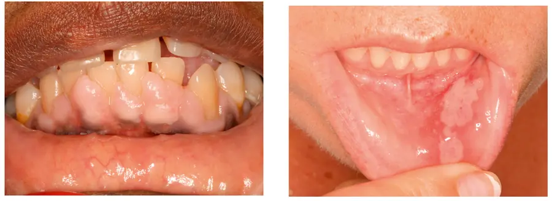

نسخه استخراجشده؛ ترجمه یا تأیید علمی انجام نشده است. وضعیت: captured
آقای ۴۰ ساله در فهرست انتظار پیوند کلیه است و پزشکش تأیید دندانپزشکی خواسته. یک مولر با ضایعهی پریاپیکال، یک دندان لق با پریودنتیت پیشرفته و یک مولر سوم نهفتهی بیعلامت دارد. کدامها پیش از پیوند درمان میخواهند؟
پس از پیوند، بیمار داروی سرکوب ایمنی میگیرد و ماههای اول سرکوب ایمنی شدید است. یک کانون عفونت دندانی در این دوره خطرناک است. برای همین معاینه و پاکسازی دهان پیش از پیوند استاندارد مراقبت است و گاهی شرط ورود بیمار به فهرست پیوند.
همهی درمانها و کشیدنها را اگر ممکن است دستکم ۲ هفته پیش از پیوند تمام کن تا زخم پیش از سرکوب ایمنی جوش بخورد.
